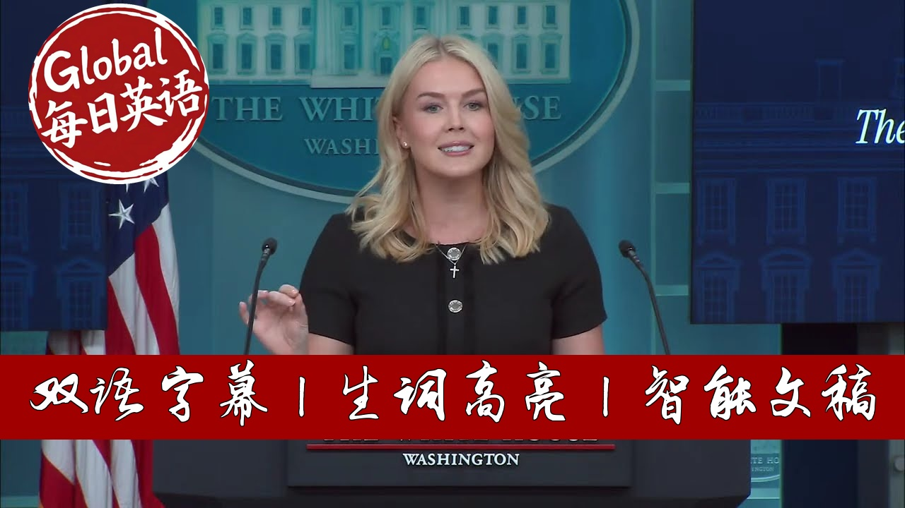

【美国白宫新闻发布会 20250829 明尼苏达教堂枪击案｜特朗普经济新政｜华盛顿特区犯罪率】
Summary: White House Press Secretary addressed the horrific shooting at a Catholic church in Minnesota, highlighting the administration's response and ongoing investigation. She detailed President Trump's economic achievements, including record-low gas prices and significant job growth driven by private sector investment. The briefing also covered the administration's successful crime reduction efforts in Washington D.C., with double-digit decreases in violent crime, carjackings, and homicides. Additional topics included the firing of the CDC director, immigration enforcement challenges, and foreign policy concerns regarding Venezuela and Ukraine.
摘要： 白宫新闻秘书就明尼苏达州天主教教堂枪击事件发表讲话，强调了政府的应对措施和正在进行的调查。她详细说明了特朗普总统的经济成就，包括创纪录的低油价和私营部门投资推动的显著就业增长。简报还涵盖了政府在华盛顿特区成功降低犯罪率的努力，暴力犯罪、劫车和凶杀案均出现两位数下降。其他话题包括疾病预防控制中心（CDC）主任被解职、移民执法挑战以及有关委内瑞拉和乌克兰的外交政策问题。

⏱️ Estimated Reading Time: 56 min.
📚 四级生词 📚 六级生词 📚 雅思生词 📚 托福生词 📚 专八生词 📚 SAT生词 📚 考研生词 📚 GRE生词
Good afternoon.
Good to see all of you.
I want to begin today's briefing by addressing the horrific shooting that took place yesterday at the Annunciation Catholic Church in Minneapolis, Minnesota, where a deranged shooter opened fire during morning mass, killing an innocent 8-year-old and 10-year-olds.
14 other children and three adults were also injured during this horrible tragedy.
This was the first morning mass of the school year for these beautiful innocent children and this sacred religious service was desecrated by an evil monster.
We are all eternally grateful to the heroic law enforcement officers and first responders whose courage and swift response aided all of those impacted by this horrible tragedy.
As director Cash Patel confirmed yesterday, the FBI is currently investigating this shooting as an act of domestic terrorism and a hate crime targeting Catholics.
President Trump signed a proclamation yesterday following his call with the governor of Minnesota, Tim Walls, acknowledging the victims and their families and directing flags to be flown at half mass.
President Trump and the first lady encouraged the entire nation to join all of us in praying for the victims and their families as they face unimaginable grief and loss.
The White House and the FBI will continue to provide further updates as they become available.
I also have a quick scheduling announcement for you today.
The president will travel to New York City on September 22nd to address the United Nations General Assembly on Tuesday, September 23rd.
On another matter, as Americans make their Labor Day weekend travel plans, they will be able to enjoy five-year low gas prices thanks to President Trump fully unleashing American energy dominance.
President Trump ended Joe Biden's Green New Scam policies and is delivering on his promise to make America affordable again.
These savings at the pump are giving everyday American families more room in their budgets at the end of each month, which is the exact opposite of what we saw under the previous administration.
And as we commemorate Labor Day this year, we finally have a president who fights and delivers for the American worker every single day.
President Trump believes that American workers are the heart and soul of our economy and our national identity, which is why he's championed an agenda that puts them first always.
For decades, the hardworking men and women of our country who built the greatest nation in world history were sold out by selfish, greedy, short-sighted globalists who put our country on a path to economic and cultural ruin.
They hollowed out our factories and towns and betrayed the American working class by shipping jobs overseas and importing millions of low-wage migrants to replace American workers.
Under President Trump, this national disgrace is over.
American workers are once again being put at the center of national trade policy and the dignity of American labor is being defended.
As a result, President Trump has already brought in nearly 10 trillion dollars in new private and foreign investments so that the top businesses in the world can create high-paying jobs in America and hire American workers to fill them.
In fact, since President Trump took office, the economy has added more than half a million new jobs to the workforce.
In a stark reversal from the Biden administration, all of that job creation has been driven by private sector growth, and all employment gains have gone to native-born Americans.
Wages for blue-collar workers are now rising at the fastest rate in the past 60 years.
And the average American worker has already seen a $500 wage increase this year alone.
Thanks to the largest middle tax cuts ever signed into law by President Trump with no tax on tips, no tax on overtime, no tax on social security, Americans in all 50 states will keep more of their hard-earned money.
The average American taxpayer will see a tax cut of nearly $4,000 because of these pro-growth provisions, according to analysis from the Nonpartisan Tax Foundation.
In other news, President Trump continues to deliver on his promise to restore law and order to our nation's capital.
Since President Trump's intervention, there have been more than 1,283 arrests right here in the District of Columbia.
Total crime in DC is down 19% and violent crime is down 30%.
Carjackings in the district are down 67%.
Homicides are down 57%.
Robberies are down 40%.
Motor vehicle thefts are down 32%.
And assaults with dangerous weapons are down 23% and property crime is down 18%.
These numbers prove the president's bold actions to make DC safe and beautiful again are working just like he said they would.
And that's why on Monday the president took additional action to sign an executive order taking steps to ensure that cashless bail in Washington DC is eliminated.
For too long, DC's reckless cashless bail policies have allowed dangerous criminals to be quickly released, which endangers everyone who lives in and visits our wonderful capital.
No cash bail has also foolishly forced law enforcement to repeatedly arrest the same offenders over and over again, only for them to be released back into our nation's capital.
This is the definition of insanity, and the president is seeking to end it.
He also signed a separate executive order addressing the crime emergency in DC by instructing the National Park Service to hire additional United States Park Police officers to support public safety and directing the US Attorney's Office for DC to hire additional prosecutors to focus solely on violence and property crimes.
So, while liberal Democrats across the country continue to double down on their failed soft on crime approach, the American people, including local DC leadership, business owners, and residents, are rallying behind President Trump's crime crackdown.
According to new polling, 81% of Americans say crime is a major problem in large cities across the country.
And a clear majority of Americans believe the president's actions are justified and necessary to reduce crime in these cities.
Indu Batia, who runs a liquor store a half mile from the White House here just down the street, is one of those Americans who are grateful for President Trump's public safety push.
Indu recently told the New York Post that her store was robbed so many times that they had to spend exorbitant sums of money on security, jeopardizing her family's financial future.
But thanks to President Trump's strong action, Indu said, quote, "All of my employees, including me, we feel much safer and even our customers feel really happy when they walk into our store."
And just yesterday, Washington DC Mayor Muriel Bowser credited President Trump for surging federal law enforcement personnel and said neighborhoods quote feel and are much safer.
We thank Mayor Bowser for her cooperation and her willingness to help us make DC safe and beautiful.
This entire effort has vindicated what President Trump and law and order advocates have been saying for years.
And this is our message to Americans in Democrat-run cities nationwide.
Decline is a choice.
You don't have to live in constant fear of being robbed, raped, or murdered.
Your leaders are lying to you, and they have been failing you for decades.
The President Trump approach of upholding law and order by letting our brave men and women in blue actually do their jobs to aggressively fight crime works.
In just a few weeks, President Trump has done more for DC residents than Democrats did in 50 years.
And this can be replicated in other crime-ridden cities across the nation.
As President Trump has said, all of these elected officials in charge have to do is pick up the phone and ask for the president and the federal government's help.
President Trump doesn't care if they are a Republican or a Democrat leader.
He wants Americans to be safe and for every law-abiding American citizen across the country to be able to thrive in their city and in their community.
With that, I'll take questions.
Here in our new media seat today, we have social media influencer, content creator Brandon Tatum.
Brandon, thank you so much for joining us today.
Why don't you kick us off?
Caroline, thank you so much for having me.
I really appreciate it.
And on behalf of everybody that follow me, the millions of people that follow me, I want to say thank you for making the sacrifice and dealing with some of the most disingenuous people on planet earth at times.
I have two questions.
The first question is associated with the shooting that occurred the other day.
And I want to ask the question of we know that it's not a gun thing.
Any rational person knows it's not a gun thing.
We know it's a mental health issue.
So I want to know from you what is President Trump and the White House going to do to address mental health issues around the country associated with these shootings?
And the second thing is Chicago.
You know, anybody with, and I say with a connected brain stem knows that Chicago's crime is out of control.
And young black men are getting killed laying dead in the middle of the streets every single day in Chicago.
No president has addressed any of these issues.
And so, what is the White House going to do to address issues in their capacity to deal with the conflict and violence in Chicago?
Sure.
Well, to your first question about this shooting in Minnesota right now, the administration is focused on helping the people of Minnesota.
It's been less than a day, of course, since this tragedy happened.
We have federal law enforcement on the ground assisting local law enforcement.
This investigation is ongoing.
There's still a lot of facts to understand about these circumstances.
And so we're going to continue to do that.
As for Chicago and cracking down on crime, it is a priority of this administration to ensure that American cities are safe again.
And I'm so glad that you brought up the crime in Chicago because we've been seeing the governor of Illinois parading out there saying that there's nothing wrong with Chicago.
It's a great place to live.
There's no crime there.
He doesn't need President Trump's help.
Well, I think the residents of Chicago beg to differ.
And the statistics beg to differ.
And I'll just share a few of those statistics with all of you.
For 13 consecutive years, Chicago has had the most murders of any US city.
This is JB Pritzker's legacy, by the way.
For seven consecutive years, Chicago has had the highest murder rate among US cities with more than 1 million people.
In 2024, just last year, Chicago's murder rate per capita was three times higher than Los Angeles and nearly five times higher than New York City.
That's more than double the murder rate in Islamabad and nearly 15 times more than Delhi.
Out of Chicago's 147,899 reported crimes this year.
That's how many crimes have been reported in Chicago since January 1st.
There have only been arrests in 16% of them.
These numbers are unacceptable.
There have been more illegal guns recovered in Chicago than in New York City and Los Angeles combined.
The number of reported motor vehicle thefts last year was more than double the number in 2021.
And Chicago has also, just like DC, come under scrutiny over discrepancies in its homicide data reporting.
So, as bad as these numbers are, perhaps they are even worse.
Uh, and this is Governor Pritzker's legacy.
He should put politics aside.
He should pick up the phone and call this president who would be more than happy to do right by law-abiding American residents in the city of Chicago.
And we hope that he will.
Gabe, and thanks for being here, Brandon.
Gator, thank you so much.
First on the uh on the firing of the CDC director.
First, who will replace her?
And then also overnight, the White House said that she did not align with the president's agenda.
Dr. Menard's attorney say that she refused to rubber stamp unscientific, reckless directives and fire dedicated health experts.
What specifically did she do?
Look, what I will say about this individual is that her lawyer's statement made it abundantly clear themselves that she was not aligned with the president's mission to make America healthy again.
Um, and the secretary asked her to resign.
She said she would and then she said she wouldn't.
So, the president fired her, which he has every right to do.
It was President Trump who was overwhelmingly reelected on November 5th.
This woman has never received a vote in her life and the president has the authority to fire those who are not aligned with his mission.
A new replacement will be announced by either the president or the secretary very soon.
And the president and secretary Kennedy are committed to restoring trust and transparency and credibility to the CDC by ensuring their leadership and their decisions are more public-facing, more accountable, strengthening our public health system, and restoring it to its core mission of protecting Americans from communicable diseases, investing in innovation to prevent, detect, and respond to future threats.
That's the mission of the CDC and we're going to make sure that uh folks that are in positions of leadership there are aligned with that mission.
And briefly on another topic, alligator Alcatraz, last week a judge u on an environmental concerns lawsuit said that the administration had 60 days to wind down operations error state officials did.
Now the administration has not been shy in fighting back against what it calls activist judges.
But why is it backing down this time?
We're not backing down.
We've always said that we are going to continue to fight in the court of law for what's right.
Uh because we know that what this administration is doing with respect to all policy, but also immigration policy is on the above the books and we're abiding by our nation's immigration laws.
And we think it's despicable that an activist judge has inserted themselves in this migrant detention facility to the point where DHS is now having to relocate these illegal immigrants to other detention facilities around the country.
That is an unnecessary burden on the Department of Homeland Security and these um these agents who should be removing these criminals from our community.
That's what the American people elected this president to do.
So, we've always maintained, Gabe, we're going to comply with court orders, but we're also going to fight back on them on the merits of the law.
Um and DHS is in compliance while we disagree with this decision, and we'll continue to fight it in court.
Um let's go to Go ahead.
Thanks so much.
So just following up on the CDC firing, um are you anticipating other uh changes there at CDC in addition to that firing?
And is the administration going through in a very sort of organized fashion?
Is there a task force that's going through high level appointees to see who is or isn't aligned with the mission?
Like should we expect more changes?
Not to my knowledge.
I understand there were a few other individuals who resigned after the firing of Miss Monz.
One of those individuals wrote in his departure statement that um he identifies pregnant women as pregnant people.
Um so that's not someone who we want in this administration anyway.
So if people are not aligned with the president's vision and the secretary's vision to make our country healthy again, um then we will gladly show them the door.
Caroline, can I just go to the back?
Thank you.
Behind you, Andrew.
Go ahead.
Oh, thank you Caroline.
The the military deployment that President Trump has sent to the Caribbean Sea close to the shores with Venezuela is massive.
It's much more that is needed to simply counter narcotics operations.
Is President Trump considering launching military strikes to military installments or facilities in Venezuelan soil?
I won't get ahead of the president with respect to any military action or questions about that ever.
Uh but what I will tell you is that many Caribbean nations and many nations in the region have applauded the administration's counterdrug operations and efforts and the president is prepared to use every element of American power to stop drugs from flooding into our country and to bring those responsible to justice.
And as I've said from this podium before, the Maduro regime is not the legitimate government of Venezuela.
It is a narco terror cartel.
Maduro is not a legitimate president.
He is a fugitive head of this drug cartel.
He has been indicted in the United States for trafficking drugs into our country.
And it is the utmost responsibility of this president in this administration uh to prevent the illicit flow of drugs into our country and to protect uh citizens from those deadly poisons.
Reagan, thanks Caroline.
I have two questions for you.
Democrats, including former White House press secretary Jen Saki and Minneapolis Mayor Jacob Bray, attacked prayer and pushed gun control in the aftermath of yesterday's shooting.
What's the White House's response to their comments?
Yes, I saw the comments of my predecessor, Miss Saki, and um frankly, I think they're incredibly insensitive and disrespectful to the tens of millions of Americans of faith across this country who believe in the power of prayer.
um who believe that prayer works and who believe that in a time of mourning like this when beautiful young children were killed while praying in a church, it's utterly disrespectful um to deride um the power of prayer in this country and it's disrespectful to the millions of Americans of faith and I would encourage Miss Saki to pray for these families themselves who need it right now more than ever.
Last question for you is that there have been media outlets who have glazed over the fact that the shooter was confused in their gender identity.
Does the administration believe that this element needs to be investigated in the shooting?
All of the elements are being investigated in the shooting.
Absolutely.
Which is why part of the reason the FBI director came out and immediately confirmed that facet of the investigation.
John, thanks a lot.
Caroline, two questions on two separate issues.
First of all, the drone and missile strikes that took place overnight in Ukraine.
General Keith Kellogg, the the president's special envoy, has described these attacks as egregious.
Do you agree with that description?
And do you view President Putin as an impediment to getting peace between these two countries?
Well, it's not about if I agree, it's about what the president thinks.
And I know what the president thinks because I talked to him about this.
He was not happy uh about this news, but he was also not surprised.
These are two countries that have been at war for a very long time.
Russia launched this attack on Kiev.
And likewise, Ukraine recently dialed a blow to Russia's oil refineries.
They have taken out, as a matter of fact, 20% of Russia's oil refinery capacity over the course of their attacks throughout the month of August.
So the president is continuing to watch this intently and this killing unfortunately will continue as long as the war continues which is why the president wants it to end and that's why he's worked harder than anyone to end this war uh which would have never started if he were president but perhaps uh both sides of this war are not ready to end it themselves.
The president wants it to end but the leaders of these two countries need it to end and want it to end must want it to end as well and I think the president will make some additional statements on this later.
My second question has to do with Can I I just had one more if I may.
It has to do with the president's intention to remove Lisa Cook as a member of the Federal Reserve Board.
Uh he is going or acting upon allegations that have been made uh by uh Trump administration official Bill Pi.
These are just allegations.
She hasn't been convicted yet of any crime.
Is the administration opposed to allowing uh Miss Cook to have due process to challenge what has been alleged against her?
I believe she is challenging it.
I believe she just filed a lawsuit today and Mr. PY has deferred those allegations over to the Department of Justice to investigate them.
What I will say is that you had a these mortgage receipts uh very clearly shown to the president and he has the cause that he needs to fire this individual.
He laid it out in the letter that he provided to her and to the public as well.
And so we'll continue to fight this battle.
Carrie, hi Caroline.
So the president just announced that he wants to have a convention right towards the midterms next year.
PNC has countered that they too want to have a convention right before the midterms as well.
Uh what's the White House's response to that?
And can you give us a little bit of a hint or tease here as to how the president envisions convention?
Look, the president put out a statement on this earlier today.
I'll let him speak uh further on the plans that he envisions, but I think he's very proud of the accomplishments and the achievements of his administration, as he should be, the most secure border in United States history, a crackdown on crime here in our nation's capital, uh an attack or a reversal of the attack on our energy industry uh from the previous administration.
As I just pointed out to you, gas prices today, this Labor Day, are the lowest they've been since Labor Day in 2020.
Our economy is bringing in millions trillions of dollars in revenue from all over the world again.
So there is so much for Republicans and for the president and for Americans across the country to be proud of and I think the president wants to see that celebrated but for any further details on this as they come we'll provide you with them.
Iris, thank you Caroline.
Two questions on the shooting.
What's the administration's message to some concerned parents across the country who might be now worried about their kids' safety related incident?
We completely and totally understand the concerns of parents across the country.
It this tragedy is it's heartbreaking.
As a parent myself, there are no words to describe just the the heartbreak that these families must be enduring.
Um which is why the president and the first lady have encouraged everyone um to continue to pray for these families and these victims.
Um, and it's why this administration is focused on removing public safety threats from our communities.
And in fact, I can share with all of you that last night in Washington DC when arrests were being made, there was an arrest of a juvenile right here in DC in Ward 7 for threats to kidnap and injure, receiving stolen property, possession of a large capacity feeding device, unlawful possession of firearms and ammunition.
A search warrant was executed.
Seven firearms were recovered and the juvenile was arrested after an investigation was initiated based on social media posts allegedly threatening violence towards a school.
Um so this was a juvenile um who was a risk to not just himself but the community here in Washington and he was removed from the community last night because of the law enforcement efforts of this administration.
And I would also point to the statement of our wonderful first lady that she released yesterday.
She wrote, "The tragic mass killing in Minnesota illuminates the need for preemptive intervention in identifying school shooters.
Early warning signs are often evident with many individuals exhibiting concerning behaviors and making violent threats online prior to their actions."
We encourage all Americans, as the old saying goes, if you see something, say something.
If you see warning signs or threats, report it to law enforcement.
This administration, federal law enforcement, will take those reports and those threats seriously.
they will be treated as a law enforcement emergency and we will act accordingly.
And on the first lady's statement, would the administration consider ramping up resources on these fronts to parents and schools across the country to help them look into these signs and prevent more tragedies?
It's a very fair question, Iris.
As for any potential future policy decisions or funding questions, it's just been over 24 hours since the this tragedy occurred.
Right now, we're focused on the FBI and their investigation and covering all the facts.
We'll leave those very important policy discussions to another day.
Um, go ahead, Megan.
Um, I had a question uh about the Lisa Cook lawsuit that you mentioned.
Does the president plan to wait until that lawsuit is resolved to appoint her replacement?
Um, I will leave that to the president to make that decision in that announcement himself.
Brian, uh, thank you Caroline.
Uh, two questions.
Um, bouncing off the CDC situation CDC, I'm curious if if administration officials are pushing back on the president's agenda privately, publicly, however, should they fear uh to lose their jobs going forward.
Um, look, I think if you're doing your job well and if you are executing on the vision and the promises that the president made to the public who elected him back to this office, then you should have no fear about your job.
Just do your job.
That's what this president wants to see.
He wants to see people solving problems.
He wants to see the the people who have the privilege of serving the American taxpayer in the federal government abiding by the wishes of the American taxpayers who overwhelmingly reelected him um in this cabinet um to make America great again or in this case make America healthy again.
On the Intel deal where the US got a stake in that company um there's two two things I want to ask about that.
First is what did the US get back in return uh for that for that deal and the second thing is what are the future plans for giving any form of money to another company it could be through the chips act like this deal or some other form of funds what are the plans there by this widest administration
look as you know Brian very well because you cover it often the intel deal is still being ironed out by the department of commerce the tees are still being crossed the eyes are still being dotted um these you know it's very much still under discussion uh but the president's thinking I can share with you is certainly to ensure that the United States government um is is making our country wealthy again and is benefiting um from some of these deals and it's a creative solution.
I know it's outside the box thinking which is uncommon um in this city um but it's something that he proposed and something that the secretary of commerce is working on putting into action.
Mary, thanks Caroline.
I have a couple questions on the shooting yesterday.
Uh the first one, this is the second shooting involving a transidentifying shooter who specifically targeted Christians and Catholic kids.
Uh what kind of consequences do the gender affirming therapists, doctors, or even the parents of these shooters face after these types of shootings?
Well, as for the parents and potential therapists in this case, again, all of that is still currently being investigated by the FBI.
I know the Secretary of Health and Human Services this morning said that HHS is um investigating perhaps links between some of these drugs and these prescription drugs that some of these minors may be taking and an increase in violence.
Um and obviously we have mental health problems in this country that this administration and Secretary Kennedy will continue to speak out about and in the work that we're doing to solve it.
Thank you.
And just to follow up, I've seen a lot of calls for action, you know, among these lawmakers saying that we should always be praying.
One that I've seen on the right actually is calls for the FBI to institute a new class of domestic terrorism that involves trans ideology.
Is that something that the administration would support?
Um I would have to check with the appropriate people on that.
Daniel, thank you Caroline.
We saw some new revised economic data come out today showing the US economy 3.3% clip largely booed by a surge in capex.
What's the White House reaction to this?
And is this sort of the president's vision beginning to come to life after the big beautiful bill is passed in July?
Yes.
I mean, look, we did say that once the big beautiful bill was signed into law, we're going to see the effects of the this massive progrowth piece of legislation.
As I laid out for you as we head into the Labor Day weekend, um there's many positive economic indicators that the American people can be hopeful about.
Uh but don't forget we are reversing four years of of uh reckless spending from the previous administration of slamming regulations down the throats of American business owners and consumers across the country.
But the administration is working very hard to unravel all of that uh and to ensure that small business owners and workers uh are thriving and that they have more money in their own pockets to spend.
Thank you.
Thanks so much Caroline.
uh back on the CDC, there was reporting that some of the initial problems between RFK and the CDC director stemmed from uh miscommunications or differences on vaccine policy.
So, I wonder if you could just say whether or not the president believes that the COVID vaccine should be available to and covered by insurance for all Americans regardless of age and pre-existing conditions.
Um, what I will tell you is that the FDA recently revoked the emergency youth authorizations for three COVID vaccinations while simultaneously greenlighting four new CO 19 vaccines with 2025 and 2026 formulas.
The reason for the revocation of that emergency youth authorization is because obviously the COVID pandemic and the public health emergency is over.
But just to correct the record because there's been a lot of misinformation on this.
The FDA's decision does not affect the availability of co vaccines for Americans who want them.
We believe in individual choice.
That's a promise both the president and the secretary have made and it's a promise they have now delivered on.
Question if I could Caroline question if I could.
Sorry.
Um, I wonder if you could ask uh I wonder if you could answer why the president hasn't acknowledged the shooting at CDC headquarters that took place earlier in August where a police officer was killed.
Um, and it was reported that the motivation for the shooting was somebody who was um really unhappy with the effects of the COVID vaccine.
We absolutely were very much aware of that shooting.
The Secretary of Health and Human Services put out a statement immediately.
He was in touch with the CDC and he actually traveled to Georgia to assess the situation and to mourn with the the people who work in that building there.
Go ahead.
Uh with respect to Labor Day, one of the most underrepresented groups right now, police officers, 30,000 police officers short in America right now.
Uh to Brandon's question, 1300 short in Chicago, 3,000 short in New York, 500 short here in Washington DC.
What can the White House, what can the president do to help recruitment of police officers?
He's done well with the military and border patrol.
What can be done to more police officers on the streets of America?
Well, the president has certainly been very successful in recruiting federal law enforcement.
If you look at the ICE recruitment campaign that was led by he and our secretary of homeland security, we've seen more than, I believe, 130,000 applicants to join ICE, which is just amazing.
Um, there's more applicants now than there are jobs to fill, and we're very grateful for that.
Clearly, Americans want to serve their communities.
They just need a leader who encourages them to do so.
So maybe Governor Pritzer should spend less time demonizing the police, more time trying to recruit more police and more time trying to call the president of the United States to get crime in his city under control.
The president wants to allow law enforcement, whether it's state, local, federal, to do their jobs, to arrest criminals, to put them behind bars, and to remove public safety threats from American communities.
He'll continue to do that.
Thank you guys.